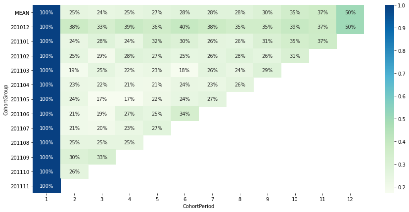
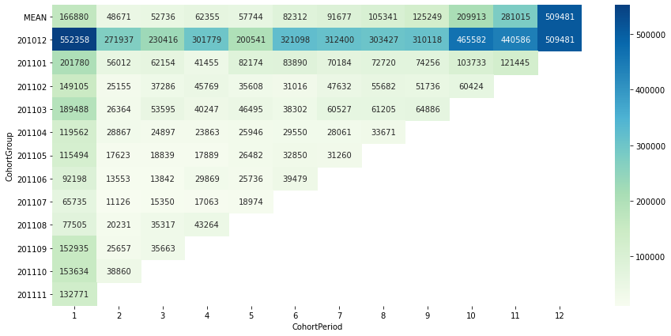
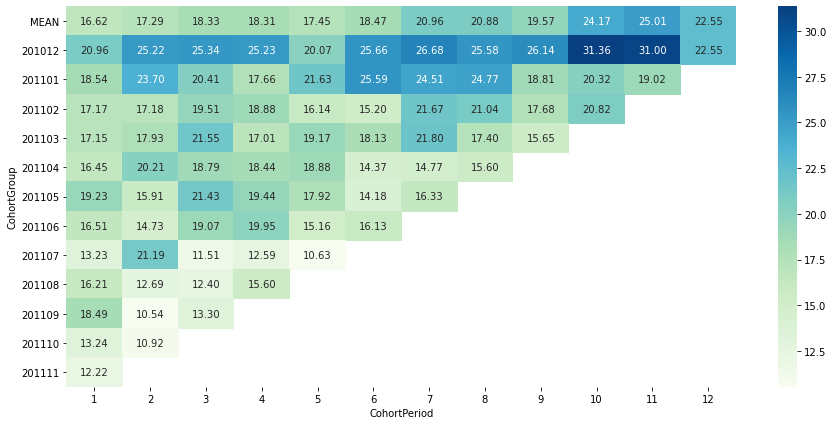

UK Ecommerce Data
Table of contents
*분석 대상 데이터셋: UK E-Commerce Data
- 데이터셋 출처
- UK-based retailer의 2020-12-01에서 2011-12-09 사이의 모든 거래를 기록한 데이터
- gift를 주로 판매하며, 대다수의 고객은 wholesaler임
데이터 파악 및 전처리
# 필요한 라이브러리 import
import pandas as pd
import numpy as np
import scipy.stats as stats
from matplotlib import pyplot as plt
import seaborn as sns
import plotly.express as px
import plotly.io as pio
pio.templates.default = "plotly_white" # default template을 지정
ecom_df = pd.read_csv('data/uk_ecommerce_data.csv')
ecom_df.head()
| InvoiceNo | StockCode | Description | Quantity | InvoiceDate | UnitPrice | CustomerID | Country | |
|---|---|---|---|---|---|---|---|---|
| 0 | 536365 | 85123A | WHITE HANGING HEART T-LIGHT HOLDER | 6 | 12/1/2010 8:26 | 2.55 | 17850 | United Kingdom |
| 1 | 536365 | 71053 | WHITE METAL LANTERN | 6 | 12/1/2010 8:26 | 3.39 | 17850 | United Kingdom |
| 2 | 536365 | 84406B | CREAM CUPID HEARTS COAT HANGER | 8 | 12/1/2010 8:26 | 2.75 | 17850 | United Kingdom |
| 3 | 536365 | 84029G | KNITTED UNION FLAG HOT WATER BOTTLE | 6 | 12/1/2010 8:26 | 3.39 | 17850 | United Kingdom |
| 4 | 536365 | 84029E | RED WOOLLY HOTTIE WHITE HEART. | 6 | 12/1/2010 8:26 | 3.39 | 17850 | United Kingdom |
→ 칼럼 정보 파악
ecom_df.info()
<class 'pandas.core.frame.DataFrame'>
RangeIndex: 541909 entries, 0 to 541908
Data columns (total 8 columns):
# Column Non-Null Count Dtype
--- ------ -------------- -----
0 InvoiceNo 541909 non-null object
1 StockCode 541909 non-null object
2 Description 540455 non-null object
3 Quantity 541909 non-null int64
4 InvoiceDate 541909 non-null object
5 UnitPrice 541909 non-null float64
6 CustomerID 406829 non-null float64
7 Country 541909 non-null object
dtypes: float64(2), int64(1), object(5)
memory usage: 33.1+ MB
데이터 타입 정리
- Customer ID: string 형태로 변경
- 현재는 Null값이 섞이 칼럼이라 float 형태로 되어 있음
- 소수점을 없애기 위해 정수로 먼저 변경한 후 str로 바꿔줌
ecom_df['CustomerID'].fillna(0, inplace=True) # 일단 N/A를 0으로 바꿔줌 ecom_df['CustomerID'] = ecom_df['CustomerID'].astype('int').astype('str') # 정수로 변경한 후, str로 바꿔줌 ecom_df.replace({'CustomerID': '0'}, 'N/A', inplace=True) # 0은 'N/A'로 바꿔줌 print(ecom_df['CustomerID'].dtypes)object -
InvoiceDate: datetime 형태로 변경
ecom_df['InvoiceDate'] = pd.to_datetime(ecom_df['InvoiceDate']) print(ecom_df['InvoiceDate'].dtypes) ecom_df.head(3)datetime64[ns]InvoiceNo StockCode Description Quantity InvoiceDate UnitPrice CustomerID Country 0 536365 85123A WHITE HANGING HEART T-LIGHT HOLDER 6 2010-12-01 08:26:00 2.55 17850 United Kingdom 1 536365 71053 WHITE METAL LANTERN 6 2010-12-01 08:26:00 3.39 17850 United Kingdom 2 536365 84406B CREAM CUPID HEARTS COAT HANGER 8 2010-12-01 08:26:00 2.75 17850 United Kingdom +) 기간 범위 확인:
print(min(ecom_df['InvoiceDate'])) print(max(ecom_df['InvoiceDate']))2010-12-01 08:26:00 2011-12-09 12:50:00
중복값 확인
# 중복값의 수를 확인
ecom_df.duplicated().sum()
5268
→ 전체 값이 다 중복된 경우, 기록 과정에서 중복 기입된 것이라고 판단. → 가장 위에 있는 행만 남기고 drop
print(len(ecom_df))
ecom_df.drop_duplicates(inplace=True)
ecom_df.reset_index(drop=True, inplace=True)
print(len(ecom_df))
541909
536641
결측치 확인
-
Description 칼럼
ecom_df['Description'].isna().sum()1454→ StockCode와 Description이 1:1 대응되는 개념인지 확인
(같은 StockCode의 Description으로 null값을 채워넣을 수 있을지 점검)temp1 = ecom_df.groupby('StockCode')[['Description']].nunique() print(len(temp1.query('Description > 1'))) print(len(temp1.query('Description == 1'))) print(len(temp1.query('Description < 1')))650 3308 112- StockCode 1가지에도 Description이 2개 이상 붙기도 해서, 단순하게 StockCode를 바탕으로 Description을 채워넣을 수는 없을 듯.
- 우선 Description의 null값을 그대로 둠.
CustemerID 칼럼
sum(ecom_df['CustomerID'] == 'N/A')
135037
# 같은 InvoiceNo라면 한 명이 한번에 구매한 것이므로, InvoiceNo의 unique 값으로도 확인해봄
ecom_df.query('CustomerID == "N/A"')['InvoiceNo'].nunique()
3710
- 개별 transaction으로 따지면, 3710개의 구매가 구매자가 남겨져 있지 않음
- 우선은 지우지 않고 둠.
이상치 / 불필요한 값 정리
ecom_df.describe()
| Quantity | UnitPrice | |
|---|---|---|
| count | 536641 | 536641 |
| mean | 9.62003 | 4.63266 |
| std | 219.13 | 97.2331 |
| min | -80995 | -11062.1 |
| 25% | 1 | 1.25 |
| 50% | 3 | 2.08 |
| 75% | 10 | 4.13 |
| max | 80995 | 38970 |
- Quanity나 UnitPrice에 -값이 섞어 있음
-
UnitPrice가 0인 경우 체크
sum(ecom_df['UnitPrice'] == 0)2510- UnitPrice = 0인 데이터는 매출과 관계가 없으므로 삭제해준다
- 아마 재고 관리를 위해 Price=0인 칼럼을 덧붙여서 Quantity를 조정해준 듯..
print(len(ecom_df)) drop_index = ecom_df[ecom_df['UnitPrice'] == 0].index ecom_df.drop(drop_index, axis='index', inplace=True) print(len(ecom_df)) # reset index ecom_df.reset_index(drop=True, inplace=True)536641 534131 -
UnitPrice가 -인 경우 체크
ecom_df.query('UnitPrice < 0') ## Stock Code가 'B'임InvoiceNo StockCode Description Quantity InvoiceDate UnitPrice CustomerID Country 297646 A563186 B Adjust bad debt 1 2011-08-12 14:51:00 -11062.1 N/A United Kingdom 297647 A563187 B Adjust bad debt 1 2011-08-12 14:52:00 -11062.1 N/A United Kingdom -
StockCode 점검
# Stock Code에 상품코드와 조금 다른 값들이 있음 print(sorted(ecom_df['StockCode'].unique())[-30:])['90214T', '90214U', '90214V', '90214W', '90214Y', '90214Z', 'AMAZONFEE', 'B', 'BANK CHARGES', 'C2', 'CRUK', 'D', 'DCGS0003', 'DCGS0004', 'DCGS0069', 'DCGS0070', 'DCGS0076', 'DCGSSBOY', 'DCGSSGIRL', 'DOT', 'M', 'PADS', 'POST', 'S', 'gift_0001_10', 'gift_0001_20', 'gift_0001_30', 'gift_0001_40', 'gift_0001_50', 'm']- ‘gift_숫자’ 형태는 gift voucher 상품
※ StockCode 중 제품이 아닌 것 정리:
StockCode Desciption 처리 방향성 S SAMPLES 무료로 샘플을 주는 데에 쓴 돈이라고 추정 → 매출과 관련이 적으므로 일단 drop POST POSTAGE 우편 요금으로 추정… Country가 주로 해외인 것을 보면 일종의 상품이라고 생각되기도 함 → keep PADS PADS TO MATCH ALL CUSHIONS Price=0.001 → 함께 판매하는 부속품으로 추정 → keep M Manual 제품명이 정확하게 찍히지 않은 구매/환불건에 대해 Manual이라고 적어놓은 것으로 추정 → keep DOT DOTCOM POSTAGE POST와 마찬가지로, 일종의 상품이라고 간주 → keep D Discount 구매할 때 Discount해준 금액 → keep CRUK CRUK Commission 특정 단체(CRUK)에 내는 Commision이라고 추정 → 매출과 관련이 적으므로 일단 drop C2 CARRIAGE 운송비 → keep BANK CHARGES Bank Charges 매출과 관련이 적으므로 일단 drop B Adjust bad debt 매출과 관련이 적으므로 일단 drop AMAZONFEE AMAZON FEE 아마존에 내는 수수료 → 매출과 관련이 적으므로 일단 drop → 제품 판매로 인한 매출과 관계 없는 Stock Code는 drop
# CRUK, BANK CHARGES, B, AMAZONFEE, S 삭제 print(len(ecom_df)) drop_index = ecom_df.query("StockCode in ['CRUK', 'BANK CHARGES', 'B', 'S', 'AMAZONFEE']").index ecom_df.drop(drop_index, axis='index', inplace=True) print(len(ecom_df)) # reset index ecom_df.reset_index(drop=True, inplace=True)534131 533979 -
Quantity가 -인 경우 체크
ecom_df.query('Quantity < 0').head(3)InvoiceNo StockCode Description Quantity InvoiceDate UnitPrice CustomerID Country 141 C536379 D Discount -1 2010-12-01 09:41:00 27.5 14527 United Kingdom 154 C536383 35004C SET OF 3 COLOURED FLYING DUCKS -1 2010-12-01 09:49:00 4.65 15311 United Kingdom 235 C536391 22556 PLASTERS IN TIN CIRCUS PARADE -12 2010-12-01 10:24:00 1.65 17548 United Kingdom - Quantity가 -인 경우는 refund, discount, 혹은 기타 지출을 의미하는 듯
- refund나 discount 금액은 매출과 관련이 있으므로 Quantity가 -인 행은 다 남겨둠.
- cf) Quantity가 0인 경우는 없음
결측치 재확인
-
Description 칼럼
ecom_df['Description'].isna().sum()0- 정리하고 나니 Description이 nan인 행은 모두 사라짐
-
CustemerID 칼럼
# Invoice 기준으로 묶어주면 1531명의 Customer가 null ecom_df.query('CustomerID == "N/A"')['InvoiceNo'].nunique()1531- nan인 값은 ‘등록되지 않은 구매자’ 개념인 듯. (비회원 구매 개념)
- 신규 이용자 / 이탈자 등을 분석할 때는 제외하는 것이 맞을 것 같지만, 인기 상품 / 기간별 매출 등을 파악할 때에는 미등록 이용자의 구매도 중요하므로 일단 남겨둠.
새로운 칼럼 생성
-
InvoiceMonth, InvoiceWeekday 칼럼 생성
ecom_df['InvoiceMonth'] = ecom_df['InvoiceDate'].dt.strftime('%Y%m') # YYYYmm 형식으로 정리 ecom_df['InvoiceWeekday'] = ecom_df['InvoiceDate'].dt.weekday # 월: 0 ~ 일: 6 ecom_df[['InvoiceDate', 'InvoiceMonth', 'InvoiceWeekday']].head()InvoiceDate InvoiceMonth InvoiceWeekday 0 2010-12-01 08:26:00 201012 2 1 2010-12-01 08:26:00 201012 2 2 2010-12-01 08:26:00 201012 2 3 2010-12-01 08:26:00 201012 2 4 2010-12-01 08:26:00 201012 2 -
TotalSpending 칼럼 생성: Quantity * UnitPrice
ecom_df['TotalSpending'] = ecom_df['Quantity'] * ecom_df['UnitPrice'] ecom_df[['Quantity', 'UnitPrice', 'TotalSpending']].head()Quantity UnitPrice TotalSpending 0 6 2.55 15.3 1 6 3.39 20.34 2 8 2.75 22 3 6 3.39 20.34 4 6 3.39 20.34
월별 매출액, 구매자수
- 201112는 9일밖에 없으므로 제외하고 그려줌
- 월별 총 매출액
fig = px.bar(ecom_df.query('InvoiceMonth != "201112"').groupby('InvoiceMonth')[['TotalSpending']].sum().reset_index(), x='InvoiceMonth', y='TotalSpending', color='TotalSpending', color_continuous_scale = 'Teal') fig.update(layout_coloraxis_showscale=False) fig.show() - 월별 순구매자수
ecom_no_na = ecom_df.query('CustomerID != "N/A"') # CustomerID가 N/A인 걸 제외한 df를 따로 저장해둠 fig = px.bar(ecom_no_na.query('InvoiceMonth != "201112"').groupby('InvoiceMonth')[['CustomerID']].nunique().reset_index(), x='InvoiceMonth', y='CustomerID', color='CustomerID', labels = {'CustomerID':'# of Customers'}, color_continuous_scale = 'Teal') fig.update(layout_coloraxis_showscale=False) fig.show()- 월별 매출액, 구매자수 모두 2011.09 ~ 2011.11 기간에 급증하는 추세
- 현재로서는 전망이 긍정적으로 판단되지만, 겨울 seasonality의 영향인지, 실적이 전반적으로 좋아지는 추세인 것인지 구분하려면 조금 더 장기간의 데이터가 필요할 듯
-
월별 고객 1인당 지출
# CustomerID = N/A인 값은 제외하고 계산 cus_spend = ecom_no_na.query('InvoiceMonth != "201112"').groupby('InvoiceMonth') cus_spend = cus_spend.agg({'CustomerID':pd.Series.nunique, 'TotalSpending':'sum'}) cus_spend['SpendingPerCustomer'] = cus_spend['TotalSpending'] / cus_spend['CustomerID'] fig = px.bar(cus_spend.reset_index(), x='InvoiceMonth', y='SpendingPerCustomer', color='SpendingPerCustomer', labels = {'SpendingPerCustomer':'Spending per Customer'}, color_continuous_scale = 'Teal') fig.update(layout_coloraxis_showscale=False) fig.show()- 1인당 지출 금액이 크게 증가하는 추세는 아님.
- 2011.09 ~ 2011.11 기간에 비교적 1인당 지출이 높게 나타나지만, 겨울 seasonality의 영향인지, 실제로 1인당 지출이 증가하는 추세인 것인지 구분하려면 조금 더 장기간의 데이터가 필요할 듯
코호트 분석
- 201112는 9일밖에 없으므로 제외하고 계산
- 첫 구매월을 기준으로 cohort 분류
ecom_cohort_df = ecom_no_na.query('InvoiceMonth != "201112"')
min_month =ecom_cohort_df.groupby('CustomerID')[['InvoiceMonth']].min()
min_month.rename(columns={'InvoiceMonth': 'CohortGroup'}, inplace=True)
ecom_cohort_df = pd.merge(ecom_cohort_df, min_month, on='CustomerID', how='left')
ecom_cohort_df.head(3)
| InvoiceNo | StockCode | Description | Quantity | InvoiceDate | UnitPrice | CustomerID | Country | InvoiceMonth | InvoiceWeekday | TotalSpending | CohortGroup | |
|---|---|---|---|---|---|---|---|---|---|---|---|---|
| 0 | 536365 | 85123A | WHITE HANGING HEART T-LIGHT HOLDER | 6 | 2010-12-01 08:26:00 | 2.55 | 17850 | United Kingdom | 201012 | 2 | 15.3 | 201012 |
| 1 | 536365 | 71053 | WHITE METAL LANTERN | 6 | 2010-12-01 08:26:00 | 3.39 | 17850 | United Kingdom | 201012 | 2 | 20.34 | 201012 |
| 2 | 536365 | 84406B | CREAM CUPID HEARTS COAT HANGER | 8 | 2010-12-01 08:26:00 | 2.75 | 17850 | United Kingdom | 201012 | 2 | 22 | 201012 |
→ CohortGroup을 기준으로 정리
ecom_cohort_df = ecom_cohort_df.groupby(['CohortGroup', 'InvoiceMonth'])
ecom_cohort_df = ecom_cohort_df.agg({'CustomerID':pd.Series.nunique, 'TotalSpending':['sum', 'mean']})
ecom_cohort_df.columns = ['Customers', 'TotalSpending', 'AverageSpending'] # 칼럼명 정리
ecom_cohort_df.head()
| CohortGroup | InvoiceMonth | Customers | TotalSpending | AverageSpending |
|---|---|---|---|---|
| 201012
|
201012 | 947 | 552358 | 20.9623 |
| 201101 | 361 | 271937 | 25.2237 | |
| 201102 | 317 | 230416 | 25.3427 | |
| 201103 | 367 | 301779 | 25.2345 | |
| 201104 | 341 | 200541 | 20.0741 |
→ 첫구매월을 기준으로 얼마나 지났는지 표기
def cohort_period(df):
df['CohortPeriod'] = np.arange(len(df)) + 1
return df
ecom_cohort_df = ecom_cohort_df.groupby(level=0).apply(cohort_period).reset_index()
ecom_cohort_df.head()
| CohortGroup | InvoiceMonth | Customers | TotalSpending | AverageSpending | CohortPeriod | |
|---|---|---|---|---|---|---|
| 0 | 201012 | 201012 | 947 | 552358 | 20.9623 | 1 |
| 1 | 201012 | 201101 | 361 | 271937 | 25.2237 | 2 |
| 2 | 201012 | 201102 | 317 | 230416 | 25.3427 | 3 |
| 3 | 201012 | 201103 | 367 | 301779 | 25.2345 | 4 |
| 4 | 201012 | 201104 | 341 | 200541 | 20.0741 | 5 |
코호트별 재방문률
cohorts1 = pd.pivot_table(ecom_cohort_df, index='CohortGroup', columns='CohortPeriod', values='Customers', aggfunc='sum')
cohort_retention = cohorts1.divide(cohorts1[1], axis=0)
cohort_retention.loc['MEAN'] = cohort_retention.mean(axis=0)
cohort_retention = cohort_retention.reindex(['MEAN', '201012', '201101', '201102', '201103', '201104', '201105', '201106', '201107', '201108', '201109', '201110', '201111'])
# heatmap으로 시각화
plt.figure(figsize=(15,7))
sns.heatmap(cohort_retention, annot=True, cmap='GnBu', fmt='.0%')
plt.yticks(rotation=0);

- 2010.12에 첫구매한 cohort가 가장 이후 재방문률이 놓은 편. (2010.12 이전부터 지속적으로 구매해오던 이용자 역시 이 그룹으로 계산되었기 때문일 수도 있음)
- 2010.12에 첫구매한 cohort의 50%가 2011.11에 다시 방문 → 겨울 seasonality가 있는 상품에 대한 수요가 있는 편이라고 추정
- 2011.09, 2011.10에 첫구매한 cohort의 경우 이전 cohort에 비해 다음달 재방문률이 다소 높은 편이지만, ‘최근에 유입된 고객일수록 재방문률이 높다’고 말하기는 어려움
코호트별 총매출액
cohort_spending = pd.pivot_table(ecom_cohort_df, index='CohortGroup', columns='CohortPeriod', values='TotalSpending', aggfunc='sum')
cohort_spending.loc['MEAN'] = cohort_spending.mean(axis=0)
cohort_spending = cohort_spending.reindex(['MEAN', '201012', '201101', '201102', '201103', '201104', '201105', '201106', '201107', '201108', '201109', '201110', '201111'])
# heatmap으로 시각화
plt.figure(figsize=(15,7))
sns.heatmap(cohort_spending, annot=True, cmap='GnBu', fmt='.0f')
plt.yticks(rotation=0);

- 2010.12에 첫구매한 cohort가 총매출에 지속적으로 가장 큰 기여를 함
- 특히, 2010.12에 첫구매한 cohort의 경우, 2011.09 ~ 2010.11 기간에도 거의 2010.12에 버금가는 큰 금액을 지출
코호트별 평균 지출액
cohort_avgspend = pd.pivot_table(ecom_cohort_df, index='CohortGroup', columns='CohortPeriod', values='AverageSpending', aggfunc='sum')
cohort_avgspend.loc['MEAN'] = cohort_avgspend.mean(axis=0)
cohort_avgspend = cohort_avgspend.reindex(['MEAN', '201012', '201101', '201102', '201103', '201104', '201105', '201106', '201107', '201108', '201109', '201110', '201111'])
# heatmap으로 시각화
plt.figure(figsize=(15,7))
sns.heatmap(cohort_avgspend, annot=True, cmap='GnBu', fmt='.2f')
plt.yticks(rotation=0);

- 2010.12에 첫구매한 cohort가 지속적으로 평균 지출액이 높은 편. 첫구매월 이후 오히려 평균 지출액이 증가하는 모습을 보임
- 오히려 최근에 유입된 cohort들의 경우, 2번째 달 지출액이 이전 cohort대비 낮은 편으로 나타남 → 긍정적이지 않은 신호라고 생각됨 (서비스가 개선되고 있다면, 점점 첫달 이후 지출액 감소분이 줄어드는 것이 이상적)
고객별 이탈 가능성 파악
-
고객별 구매 내역을 월별로 정리
ecom_purchase = ecom_no_na.query('TotalSpending >= 0') # TotalSpending이 양수인 값만 반영. (-는 반품한 내역으로 추정) temp = ecom_purchase.query('InvoiceMonth != "201112"') # 201112는 제외하고 계산 customer_usage = pd.pivot_table(temp, index='CustomerID', columns='InvoiceMonth', values='InvoiceNo', aggfunc='count') customer_usage = customer_usage.applymap(lambda x: 'O' if x > 0 else 'X') customer_usage.head()CustomerID 201012 201101 201102 201103 201104 201105 201106 201107 201108 201109 201110 201111 12346 X O X X X X X X X X X X 12347 O O X X O X O X O X O X 12348 O O X X O X X X X O X X 12349 X X X X X X X X X X X O 12350 X X O X X X X X X X X X - 고객별로, 구매와 구매 사이에 걸리는 평균 기간을 계산
- 2011.10 ~ 2011.11 기간에 한 번만 구매한 고객은 ‘New Customer’라고 기재 (이탈자라고 보기에는 최근에 새로 구입한 고객이므로)
- 2010.12 ~ 2011.09 기간에 한 번 구매한 이후 다시 돌아오지 않은 고객은 ‘Never Returned’라고 기재
for index in customer_usage.index: templist = customer_usage.loc[index].to_list() month_btw = [] for i in range(12): if templist[i] == 'O': for j in range(1, 12 - i): if templist[i + j] == 'O': month_btw.append(j) break if month_btw: month_btw_avg = sum(month_btw) / len(month_btw) else: if (customer_usage.loc[index, '201111'] == 'O') or (customer_usage.loc[index, '201110'] == 'O'): month_btw_avg = 'New Customer' else: month_btw_avg = 'Never Returned' customer_usage.loc[index, 'avg_month_btw_purchases'] = month_btw_avg customer_usage.head()CustomerID 201012 201101 201102 201103 201104 201105 201106 201107 201108 201109 201110 201111 avg_month_btw_purchases 12346 X O X X X X X X X X X X Never Returned 12347 O O X X O X O X O X O X 2.0 12348 O O X X O X X X X O X X 3.0 12349 X X X X X X X X X X X O New Customer 12350 X X O X X X X X X X X X Never Returned → ‘Never Returned’인 고객의 수 파악:
len(customer_usage.query('avg_month_btw_purchases == "Never Returned"'))1097- 2010.12 ~ 2011.09 기간에 한 번 구매한 이후 다시 돌아오지 않은 고객이 1097명
+) 지속적으로 구매해 온 고객의 평균 구매 간격 파악:
temp = customer_usage.query('avg_month_btw_purchases not in ["Never Returned", "New Customer"]') temp['avg_month_btw_purchases'].mean()2.870106683984906- 평균적으로 2.9개월 간격으로 구매
-
마지막 구매 이후 경과한 기간 계산
# 고객별 마지막 구매월 파악 last_month = ecom_purchase.query('InvoiceMonth != "201112"').groupby('CustomerID')[['InvoiceMonth']].max() last_month.rename(columns={'InvoiceMonth':'LastMonth'}, inplace=True) customer_usage = customer_usage.join(last_month) # 마지막 구매 이후 경과한 기간 계산: 현재시점(2010.12) - 마지막 구매월 for index in customer_usage.index: lastmonth = customer_usage.loc[index, 'LastMonth'] if lastmonth == '201012': lastmonth = 201100 customer_usage.loc[index, 'months_after_latest_purchase'] = 201112 - int(lastmonth) customer_usage.head()CustomerID 201012 201101 201102 201103 201104 201105 201106 201107 201108 201109 201110 201111 avg_month_btw_purchases LastMonth months_after_latest_purchase 12346 X O X X X X X X X X X X Never Returned 201101 11 12347 O O X X O X O X O X O X 2.0 201110 2 12348 O O X X O X X X X O X X 3.0 201109 3 12349 X X X X X X X X X X X O New Customer 201111 1 12350 X X O X X X X X X X X X Never Returned 201102 10 +) ‘Never Returned’ 고객의 평균 구매 후 경과 기간:
customer_usage.query('avg_month_btw_purchases == "Never Returned"')['months_after_latest_purchase'].mean()7.353691886964448- 평균적으로 마지막 구매 이후 7개월 이상이 지남
- 구매 지속 고객의 ‘risk ratio’ 계산
- risk ratio(위험 비율): 마지막 구매 이후 경과한 기간 / 평균 구매 간격
- 고객별로 평균 구매 간격이 다른 경우가 많기 때문에, ‘risk ratio’를 계산해보면 각각의 성격에 맞게 이탈 여부를 판별할 수 있다
- ex) 평균 4달 간격으로 구매하던 고객이 6달 동안 구매하지 않은 경우보다 평균 2달 간격으로 구매하던 고객이 6달 동안 구매하지 않은 경우가 더 강한 이탈 신호라고 판단
likely_customer = customer_usage.query('avg_month_btw_purchases not in ["Never Returned", "New Customer"]') likely_customer['risk_ratio'] = likely_customer['months_after_latest_purchase'] / likely_customer['avg_month_btw_purchases'] likely_customer.head()CustomerID 201012 201101 201102 201103 201104 201105 201106 201107 201108 201109 201110 201111 avg_month_btw_purchases LastMonth months_after_latest_purchase risk_ratio 12347 O O X X O X O X O X O X 2 201110 2 1 12348 O O X X O X X X X O X X 3 201109 3 1 12352 X X O O X X X X X O X O 3 201111 1 0.333333 12356 X O X X O X X X X X X O 5 201111 1 0.2 12359 X O O X X X O X X X O X 3 201110 2 0.666667 → risk ratio가 1.5보다 높은 이용자수:
print(len(likely_customer.query('risk_ratio > 1.5'))) # 평균 구매 간격의 1.5배가 넘는 기간 동안 구매하지 않고 있는 고객의 수515
> 결론: 2010.12 ~ 2011.11 내의 순구매자 4371명 중 1097명은 아마 이탈한 것이 확정적, 515명은 이탈 위기
- risk ratio가 일정 수치가 넘는 고객의 경우 특별한 관리를 통해 이탈을 방지하는 것이 필요하다고 생각됨
월별 이탈률
: 구매 지속 고객의 경우 평균 구매 간격이 2.9개월 정도의 기간라고 계산되었으므로, 구매 이후 3개월 간 이용이 없는 이용자를 ‘이탈자’로 간주하고 월별 변화를 분석
-
customer_usage의 월별 O, X 부분을 복사
customer_churn = customer_usage.copy() customer_churn.drop(['avg_month_btw_purchases', 'LastMonth', 'months_after_latest_purchase'], axis='columns', inplace=True) # 필요 없는 칼럼은 drop customer_churn.head()CustomerID 201012 201101 201102 201103 201104 201105 201106 201107 201108 201109 201110 201111 12346 X O X X X X X X X X X X 12347 O O X X O X O X O X O X 12348 O O X X O X X X X O X X 12349 X X X X X X X X X X X O 12350 X X O X X X X X X X X X - 월별 이용 내역을 바탕으로, 이탈 여부 정리
- 구매가 일어난 월을 기준으로, 그 후 3개월 간 다시 구매하지 않으면 ‘Churn’이라고 표기
- 3개월 이내에 다시 구매한 경우, ‘Returning’이라고 표기
- 구매가 일어나지 않은 월은 ‘N/A’로 표기
columns = customer_churn.columns for index in customer_churn.index: usage_list = list(customer_churn.loc[index]) for i in range(len(columns) - 3): if usage_list[i] == 'X': customer_churn.loc[index, columns[i]] = 'N/A' else: if 'O' in usage_list[i+1 : i+4]: customer_churn.loc[index, columns[i]] = 'Returning' else: customer_churn.loc[index, columns[i]] = 'Churn' customer_churn.drop(['201109', '201110', '201111'], axis='columns', inplace=True) customer_churn.head()CustomerID 201012 201101 201102 201103 201104 201105 201106 201107 201108 12346 N/A Churn N/A N/A N/A N/A N/A N/A N/A 12347 Returning Returning N/A N/A Returning N/A Returning N/A Returning 12348 Returning Returning N/A N/A Churn N/A N/A N/A N/A 12349 N/A N/A N/A N/A N/A N/A N/A N/A N/A 12350 N/A N/A Churn N/A N/A N/A N/A N/A N/A -
unstack & rename columns
customer_churn = customer_churn.unstack().reset_index() customer_churn.rename(columns={'level_0':'InvoiceMonth', 0:'ChurnFlag'}, inplace=True) customer_churn.head()InvoiceMonth CustomerID ChurnFlag 0 201012 12346 N/A 1 201012 12347 Returning 2 201012 12348 Returning 3 201012 12349 N/A 4 201012 12350 N/A -
월별 Churn / Returning 고객 수 및 비율을 계산
# InvoiceMonth, ChurnFlag를 기준으로 groupby ('N/A'는 무시) monthly_churn = customer_churn.query('ChurnFlag != "N/A"') monthly_churn = monthly_churn.groupby(['InvoiceMonth', 'ChurnFlag'])[['CustomerID']].count() monthly_churn.rename(columns={'CustomerID':'CustomerCount'}, inplace=True) # 월별로, Churn vs Returning 비율을 계산 monthly_churn['Percentage'] = monthly_churn.groupby(level=0)['CustomerCount'].transform(lambda x: x / x.sum()) monthly_churn.head(6)InvoiceMonth ChurnFlag CustomerCount Percentage 201012
Churn 357 0.403846 Returning 527 0.596154 201101
Churn 263 0.354926 Returning 478 0.645074 201102
Churn 254 0.335092 Returning 504 0.664908
월별 이탈률 추이
-
월별 재구매자수 & 이탈자수 추이
fig = px.bar(monthly_churn.reset_index(), x='InvoiceMonth', y='CustomerCount', color='ChurnFlag', barmode='group', category_orders = {'ChurnFlag':['Returning', 'Churn']}, hover_data={'Percentage': ':.0%'}, color_discrete_sequence = [px.colors.sequential.Teal[0], px.colors.sequential.Teal[2]]) fig.show()- 재구매자: 2010.12 대비 2011.08에 약 33% 증가
- 이탈자 수 자체는 크게 급감하는 추세를 보이지는 않지만, 2011.05 이후에는 비교적 감소 추세
- 하지만 구매자 수가 증가하는 동안 이탈자 수가 증가하지 않고 유지되었다는 것만으로도 긍정적인 성과라고 생각됨
-
월별 재구매율 & 이탈률 추이
fig = px.bar(monthly_churn.reset_index(), x='InvoiceMonth', y='Percentage', color='ChurnFlag', category_orders = {'ChurnFlag':['Returning', 'Churn']}, color_discrete_sequence = [px.colors.sequential.Teal[0], px.colors.sequential.Teal[2]]) fig.update_yaxes(tickformat='.0%') fig.show()- 월별 전체 구매자 대비 비율로 따지면, ‘이탈률’은 감소 추세라고 할 수 있을 듯.
월별 신규 유입률
: 구매 지속 고객의 경우 평균 구매 간격이 2.9개월 정도의 기간라고 계산되었으므로, 구매 이전에 3개월 간 이용이 없었던 이용자를 ‘신규유입자’로 간주하고 월별 변화를 분석
- 고객별 월별 신규 유입 여부 정리
- 구매가 발생한 월을 기준으로, 그 전 3개월 간 이용이 없었다면 ‘New’라고 표기
- 3개월 이내에 구매했던 이력이 있다면 ‘Returning’이라고 표기
- 구매하지 않은 월은 ‘N/A’로 표기
# customer_usage의 월별 O, X 부분을 복사 new_customer = customer_usage.copy() new_customer.drop(['avg_month_btw_purchases', 'LastMonth', 'months_after_latest_purchase'], axis='columns', inplace=True) # 월별 이용 내역을 바탕으로, 신규 유입 여부 정리 columns = new_customer.columns for index in new_customer.index: usage_list = list(new_customer.loc[index]) for i in range(3, len(columns)): if usage_list[i] == 'X': new_customer.loc[index, columns[i]] = 'N/A' else: if 'O' in usage_list[i-3 : i]: new_customer.loc[index, columns[i]] = 'Returning' else: new_customer.loc[index, columns[i]] = 'New' new_customer.drop(['201012', '201101', '201102'], axis='columns', inplace=True) new_customer.head()CustomerID 201103 201104 201105 201106 201107 201108 201109 201110 201111 12346 N/A N/A N/A N/A N/A N/A N/A N/A N/A 12347 N/A Returning N/A Returning N/A Returning N/A Returning N/A 12348 N/A Returning N/A N/A N/A N/A New N/A N/A 12349 N/A N/A N/A N/A N/A N/A N/A N/A New 12350 N/A N/A N/A N/A N/A N/A N/A N/A N/A -
월별 Churn / Returning 고객 수 및 비율을 계산
# unstack & rename new_customer = new_customer.unstack().reset_index() new_customer.rename(columns={'level_0':'InvoiceMonth', 0:'NewFlag'}, inplace=True) # InvoiceMonth, NewFlag를 기준으로 groupby ('N/A'는 무시) monthly_new = new_customer.query('NewFlag != "N/A"') monthly_new = monthly_new.groupby(['InvoiceMonth', 'NewFlag'])[['CustomerID']].count() monthly_new.rename(columns={'CustomerID':'CustomerCount'}, inplace=True) # 월별로, New vs Returning 비율을 계산 monthly_new['Percentage'] = monthly_new.groupby(level=0)['CustomerCount'].transform(lambda x: x / x.sum()) monthly_new.head(6)InvoiceMonth NewFlag CustomerCount Percentage 201103
New 452 0.464066 Returning 522 0.535934 201104
New 361 0.421729 Returning 495 0.578271 201105
New 372 0.352607 Returning 683 0.647393
월별 신규유입률 추이
-
월별 재구매자수 & 신규유입자수 추이
fig = px.bar(monthly_new.reset_index(), x='InvoiceMonth', y='CustomerCount', color='NewFlag', barmode='group', category_orders = {'NewFlag':['Returning', 'New']}, hover_data={'Percentage': ':.0%'}, color_discrete_sequence = [px.colors.sequential.Teal[0], px.colors.sequential.Teal[2]]) fig.show()- 재구매자: 2011.03 대비 2011.11에 약 92% 증가
- 2011.09 ~ 2011.11 3개월 간 신규유입자가 500명 위로 높게 유지됨
-
월별 재구매율 & 신규유입률 추이
fig = px.bar(monthly_new.reset_index(), x='InvoiceMonth', y='Percentage', color='NewFlag', category_orders = {'NewFlag':['Returning', 'New']}, color_discrete_sequence = [px.colors.sequential.Teal[0], px.colors.sequential.Teal[2]]) fig.update_yaxes(tickformat='.0%') fig.show()- 월별 전체 구매자 대비 비율로 따지면, 신규유입률은 여름(2011.06 ~ 2011.08)에 감소 후 가을 이후로 다시 증가하는 경향을 보임
- 1년 정도의 데이터를 더 확보하면 seasonality를 더 명확히 파악하고 전략을 세울 수 있을 거라 생각됨 (ex. 신규 유입이 많은 겨울 시즌에 집중 프로모션)